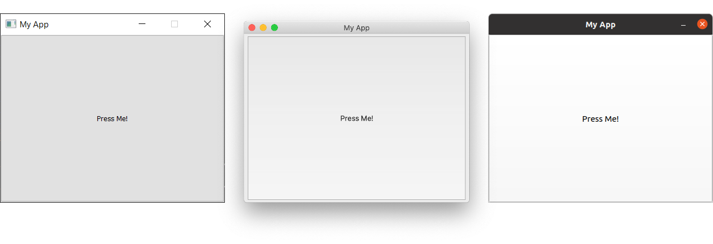

Introduktion
Programmering B
Vibenshus Gymnasium
2022 - 2024
Lidt om mig
Matematik
For funktionen af to variable
\[f(x,y) = 2 x^3 y^2+y^3\,,\]
er de første- og anden-afledte følgende:
\[\frac{\partial f}{\partial x} = 6 x^2 \quad , \quad \frac{\partial f}{\partial y} = 4 x^3 y + 3 y^2\]
og
\[\frac{\partial^2f }{\partial x^2} = 12 xy^2 \quad , \quad \frac{\partial^2 f}{\partial y^2} = 4 x^3 + 6 y \quad , \quad \frac{\partial^2 f}{\partial x \partial y} = 12 x^2y \quad , \quad \frac{\partial^2 f}{\partial y \partial x} = 12 x^2 y\,.\]
Fysik

Astronomi
Open source evangelist
- Jeg kan ikke fikse jeres windowsproblemer. (Jeg har ikke brugt windows i 18 år)
- Men jeg kan hurtigt installere en GNU/Linux-distribution på jeres computere!
- Benytter selv openSUSE Tumbleweed
- Forsøger at klare alt med
GNU Emacsogorg mode. - Anvender dog
vimkeybindings vha EVIL.


Bor på Amager
- Genbo til ITU (IT Universitet)
- Lejligheden er ofte i TV-Avisen.
Med kone og tre børn

Lidt om Pro B
De formelle sider :/

Faglige mål
Eleverne skal kunne:
- bruge programmering til at undersøge et emne eller problemområde, med henblok på - via programmets funktion - at skabe ny indsigt eller til at løse et problem
- behandle problemstillinger i samspil med andre fag
- anvende avancerede konstruktioner i et programmeringssprog
- redegørefor arkitekturen af programmer på forskellige abstraktionsniveauer, herunder relationen mellem brug og funktion
- redegøre for simple specifiktationsmodeller og realisere disse i simple velstrukturerede programmer samt teste disse
- rette, tilpasse og udvide avancerede programmer
- demonstrere viden om fagets identitet og metoder
- arbejde inkrementelt og systematisk i programmeringsprocessen.
Kernestof
Kernestoffet er:
- programmeringssprog og elementer i programmers opbygning, herunder variabler, typer, udtryk, kontrolstrukturer, parametrisering/abstraktionsmekanismer, rekursion, polymorfi og algoritmemønstre
- arkitekturen for programmers interaktion med omgivelserne med henblik på hændelsesstyret interaktion og interaktion mellem systemer
- generiske programdele og biblioteksmoduler
- arbejdsgange og systematik i programmeringsprocessen, herunder test og fejlfinding
- abstrakte programmeringsbeskrivelser og dokumentation.
Omfang
- 3 lektioner i 2.g
- 5 lektioner i 3.g
Fordybelsestid
WIP (Work In Progress)
| 2.g efterår | 2.g forår | 3.g efterår | 3.g forår | Samlet | |
|---|---|---|---|---|---|
| FT MED ret | 2 | 3 | 3 | 8 | |
| FT UDEN ret | 3 | 5 | 3 | 11 | |
| terminsprøve/projekt | 8 | 8 | |||
| Samlet | 5 | 8 | 6 | 8 | 27 |
Logbog
Den enkelte elev dokumenterer løbende sin faglige udvikling i en logbog. Dokumentationen i logbogen kan have form af f.eks. it-systemer, programmer, noter, synopser, programbeskrivelser og flowcharts.
Eksamensprojekt
- 20 timers undervisningstid til sidst i faget.
- Grupper af 2 til 3 (i særlige tilfælde individuelt)
- Består af et produkt (kode etc) og en synopsis (rapport).
- Synopsen skal dokumentere udviklingen af det færdige produkt, maks 5 til 8 normalsider ekskl. kode, rutediagrammer, bilag mm.
- Skolen giver nogle projektoplæg, der kan vælge mellem.
- Eksamensgrupperne skal udarbejde en fælles projektbeskrivelse inden for et af projektoplæggene. Projektbeskrivelsen skal godkendes af skolen.
- Synopsen udarbejdes individuelt.
- Synopsis og produkt skal senest afleveres en uge før eksamensperioden begynder.
- Synopsis og produkt indgår i grundlaget for den afsluttende årskarakter.
- Synopsen rettes og kommenteres ikke inden en eventuelt prøve.
Eksamen
- Mundtlig eksamen: Fremlæggelse af eksamensprojekt og opgave med bilag tildelt ved lodtrækning.
- Synopser, fortegnelse over eksamensprojekter samt opgaver med bilag sendes til censor
- Problemstillinger drøftes med censor inden eksaminerne.
- Forberedelsestid: 60 min
- Eksamenstid: 30 min
- Først præsentation af eksamensprojekt med spørgsmål fra eksaminator og censor. Herefter samtale omkring den trukne opgave med bilag.
- Der gives en samlet karakter ud fra den mundtlige præstation, omfattende præsentation af eksamensprojektet og opgaven med bilag.
- Der skal afleveres 2 eksemplarer af synopserne. Den ene kan fremsendes til censor.
- Produkt og synopsis skal være til rådighed ved eksamen.
- Elever skal gerne selv medbringe udstyr til eksamen.
- Man må gerne anvende internettet i forberedelsen og til eksamen.
De sjove sider :)
Hvordan skal vi så lære at programmere?

Git
- Vi kommer til at arbejde meget med
git.- Logbøger
- Opgaver
- Afleveringer
- Præsentationer
- I skal bruge en
github-konto- som skal linkes til
github classroom
- som skal linkes til


Python

1: print("Hello world!")
Hello world!
Det fundamentale
- Vi skal lege det fundamentale ind vha bibliotektet
python arcade - Vi tager udgangspunkt i bogen Arcade Academy - Learn Python
Vi skal bl.a. arbejde med
- Variable og udtryk
- Funktioner
- Kontrolsekvenser - løkker og betingelser
- Lister
- Klasser, objekter og OOP

Udvikling af GUIs
- Vi vil anvende
PyQt6ellerPyside6 - Eventbaseret programmering vha
signals & slotsiQt
1: import sys 2: 3: from PyQt6.QtCore import QSize, Qt 4: from PyQt6.QtWidgets import QApplication, QMainWindow, QPushButton 5: 6: 7: # Subclass QMainWindow to customize your application's main window 8: class MainWindow(QMainWindow): 9: def __init__(self): 10: super().__init__() 11: 12: self.setWindowTitle("My App") 13: 14: button = QPushButton("Press Me!") 15: 16: self.setFixedSize(QSize(400, 300)) 17: 18: # Set the central widget of the Window. 19: self.setCentralWidget(button) 20: 21: 22: app = QApplication(sys.argv) 23: 24: window = MainWindow() 25: window.show() 26: 27: app.exec()

Kryptografi
- Introduktion til forskellige krypterings- og dekrypteringsmetoder. Fra det helt simple til RSA-kryptering.
- Vi vil tage udgangspunkt i bogen Cracking codes with Python
- Her har vi særligt fokus på
algoritmedesignetc
1: message = 'Three can keep a secret, if two of them are dead.' 2: translated = '' 3: 4: i = len(message) - 1 5: while i >= 0: 6: translated = translated + message[i] 7: i = i - 1 8: 9: print(translated)
.daed era meht fo owt fi ,terces a peek nac eerhT

Styring af legorobotter
- Vi skal bygge (simple) legorobotter
- og styre dem vha
python. - Vi kommer formentligt til at anvende pybricks og Lego Mindstorms EV3


Kunstig intelligens og Machine Learning
- Hvis tiden tillader det, skal vi også arbejde med Machine Learning af en eller anden art.
- Det er jo frygteligt populært for tiden.
Godt, skal vi så komme i gang?
Fagets hjemmeside
Som et lille eksperiment vil jeg forsøge at holde jer opdateret på en lille hjemmeside, som jeg leger lidt med. (Det er faktisk bare en org mode-fil, som er eksporteret til html og lagt på nettet vha github pages. Det er utroligt, hvad man kan klare fra emacs.)
Find den her: https://vibenshus-gymnasium-programmering.github.io/
Her vil I kunne finde lektionsbeskrivelser, links til præsenationer (inkl. denne) og opgaver, samt undervisningsbeskrivelser. Måske kommer der mere til senere.
Programmer, vi skal bruge
Git
Download og installation
- Besøg https://git-scm.com/downloads
- Download den version, der passer til jeres operativsystem.
- Følg vejledningen i installationsprogrammet.
- Vi kommer i første omgang til at anvende kommandolinjen, men man også installere grafiske brugerflader. Hvis I vælger dette, må I selv vælge, hvilken I vil anvende.
- Der kommer også til at være understøttelse af git i de IDE'er, I kan vælge mellem.

Python

Download og installation
- Besøg https://www.python.org/downloads/
- Download den version af python, som passer til jeres operativsystem.
- Bare vælg det højeste versionsnummer.
- Hvis man anvender et 32-bit operativsystem, så kan dette også vælges ved at lede lidt på siden.
- Når I installerer python vha installationsprogrammet, er det vigtigt, at I tilføjer python til jeres "PATH"

Editorer og IDE'er

eller måske (Hvis I er meget nørdede)
Pycharm
- Jetbrains udgiver en række af IDE'er til forskellige sprog. Til
pythonhedder deres IDEPyCharm. - Download PyCharm her: https://www.jetbrains.com/pycharm/download/
- Vælg Community.
- Følg installationsvejledningen.
Visual Studio Code
- Måske bruger I allerede vs code. Hvis I gør, så skal I ikke rigtig gøre andet. :)
- Ellers kan det hentes her: https://code.visualstudio.com/
- Følg installationsvejledningen.
- (En open source evangelist ville til enhver tid vælge vs codium i stedet for, eller editorer som vim eller som mig emacs. Men så nørdet behøver man ikke at være for at være med på holdet. :))